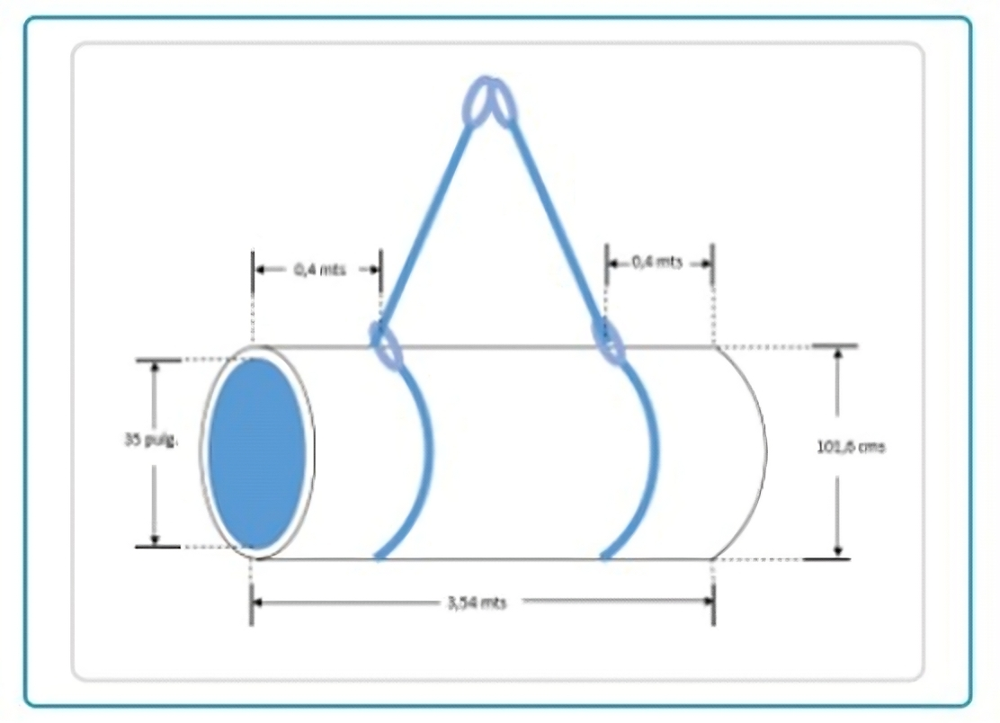
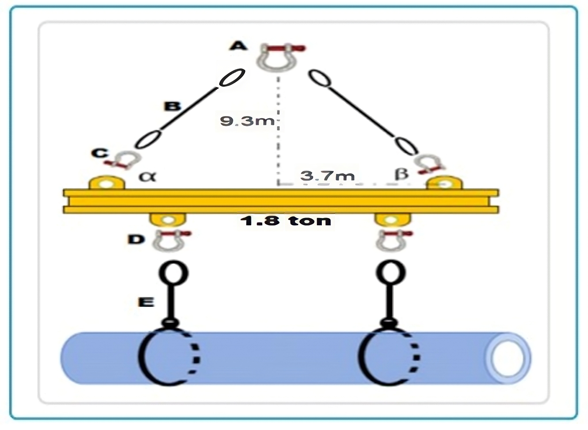

Regresar
CONOCIMIENTOS GENERALES
43) Cual sera el peso para una tuberia de fierro 7.85 ton/mt
3
, con un diametro inferior de 35 pulg, diametro sup 101.5 mts, largo 3.54 mts, diferencia 1: 0.4 mts, diferencia 2: 0.4 mts.:
a. 8,789 ton.
b. 4,567 ton.
c. 9,324 ton.
d. 5,28 ton.

Verificar
44) Calcule el angulo formado por una eslinga en la operacion, largo total = 6 metros, tuberia de fierro 7.85 ton/mt
3
, con un diametro inferior de 35 pulg, diametro sup 101.5 mts, largo 3.54 mts, diferencia 1: 0.4 mts, diferencia 2: 0.4 mts:
a. 35°.
b. 90°.
c. 60°.
d. 55°.
Verificar
45) Calcularla tension de ambas eslingas, peso de la carga 5 ton:
a. Tension 1 = 3.499 ton, Tension 2 = 3.100 ton.
b. Tension 1 = 3.489 ton, Tension 2 = 2.771 ton.
c. Tension 1 = 4.567 ton, Tension 2 = 3.989 ton.
d. Tension 1 = 3.956 ton, Tension 2 = 3.335 ton.
Verificar
46) Calcular el peso neto de la carga, diametro 72 (in), espesor 65 (mm), largo 15 (mts), hormigon 2.4 ton:
a. 12.3 ton.
b. 10.65 ton
c. 13 ton
d. 12.901 ton

Verificar
47) Calcular el largo y angulo de la eslinga (B), peso bruto de 14.701 ton:
a. Largo = 7,6 mts, angulo = 56°.
b. Largo = 6,4 mts, angulo = 45°.
c. Largo = 10 mts, angulo = 68°.
d.Largo = 11 mts, angulo = 67°.
Verificar
48) Calcular la capacidad real del grillete (A), grillete de 1 1/2", WLL 30 ton:
a. 30 ton.
b. 28 ton.
c. 21 ton.
d. 18 ton.
Verificar
49) Calcular la capacidad real de la eslinga (E), eslinga de cable de 3/8", WLL 9.5 ton, angulo de trangulamiento 78°:
a. 6.0 ton.
b. 9 ton.
c. 8 ton.
d. 7.5 ton.
Verificar
50) Carga de prueba es:
a. Una carga que se puede aplicar para comprobar los materiales o la fabricacion.
b. Cuando fallan los productos de izaje.
c. Maxima carga permitida que un producto esta autorizado a sostener.
d. capacidad de reserva teorica.
Verificar
51) El minimo factor de diseño de la eslinga de cadena y sus accesorios son de:
a. 5 a 1.
b. 6 a 1.
c. 4 a 1.
d. 3 a 1.
Verificar
52) Cual sera la capacidad para una eslinga de cadena en enganche enlazado:
a. 75% de una vertical.
b. 25% de una vertical.
c. Igual que una vertical.
d. Ninguna de las anteriores.
Verificar
53) El tamaño del area segregada es de:
a. 1 vez la altura de la carga suspendida.
b. 2 veces la altura de la carga suspendida.
c. 3 veces la altura de la carga suspendida.
d. 4 veces la altura de la carga suspendida.
Verificar
1
2
3
4
5
6
7
8
9
10
11
12